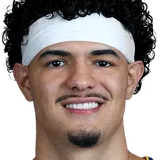

Buddy Hield
2016-17 to 2025-26 · Career Map
 New Orleans,
New Orleans,  Sacramento,
Sacramento,  Indiana,
Indiana,  Philadelphia,
Philadelphia,  Golden State,
Golden State,  Atlanta
Atlanta
His best final NBA finish was #4 of 30, with the 2023-24 Indiana Pacers. In his 779 games for 6 teams over 10 seasons they went 343–436 (44.0%), −93 games under .500, with an average final finish of 18.2. The biggest one-season rise in his career: the Indiana Pacers went from #23 in 2022-23 to #4 in 2023-24.
Jump to: Record by opponent · Season by season · Teammate help
Compare Buddy Hield with…
Suggested, same era and similar teammate help:


Final NBA finish, season by season
Title Finals Other playoffs Missed playoffs. #1 = champion; the dashed line is last place that season. Each point opens that season's final standings.
All 30 teams ranked in 2023-24, his best finish (#4)Teammate help
 Anthony Davis6.01 season
Anthony Davis6.01 season Stephen Curry5.52 seasons
Stephen Curry5.52 seasons Tyrese Haliburton4.23 seasons
Tyrese Haliburton4.23 seasons
Career
Career records (W–L, W − L, with and without) include 2026-27 games through Nov. 22, 2026; season counts and finishes are through 2025-26. Each card opens its board in the same scope. How we count.

Latest completed seasons
- 2025-26·
 Golden State·#20 of 3037–45 · Missed playoffs
Golden State·#20 of 3037–45 · Missed playoffs - 2024-25·Golden State·#8 of 3048–34 · Lost in the conference semifinals 1–4 to
 Minnesota
Minnesota - 2023-24·
 Indiana·#4 of 3047–35 · Lost in the conference finals 0–4 to
Indiana·#4 of 3047–35 · Lost in the conference finals 0–4 to  Boston
Boston
2026-27 so far
Games through Nov. 22, 2026, the last game in the nightly data. These games are already in his career records above (W–L, win %, W − L, with and without, all marked "incl. 2026-27"). Season counts, final finishes and teammate help use completed seasons through 2025-26; 2026-27 joins them when the season ends.
| Team | His games | With him | Without him | Gap | On/off per 100 | Started / bench | Close games |
|---|---|---|---|---|---|---|---|
| 14 | 4–10 28.6% | 0–2 0.0% | +28.6 | +2.7 | 0–1 / 4–9 | 2–3 |
Season by season
Newest first; every header sorts. Final NBA finish is the team's rank among all teams that season (#1 = champion) and opens that season's standings. "Without him" uses the team-season window; the span line counts only the games between his first and last game for the team.
| 2025-26 | #20 of 30 | 37–45 45.1% | Missed playoffs | 44 of 82 | 21–23 47.7% | 7–2 77.8%span: 6–1, gap −38.0 | −30.1 | |
| 2025-26 | #12 of 30 | 46–36 56.1% | Lost 1st round 2–4 | 7 of 82 | 4–3 57.1% | 17–6 73.9%span: 16–5, gap −19.0 | −16.8 | |
| 2024-25 | #8 of 30 | 48–34 58.5% | Lost conf semis 1–4 | 82 of 82 | 48–34 58.5% | N/A | N/A | |
| 2023-24 | #4 of 30 | 47–35 57.3% | Lost conf finals 0–4 | 52 of 82 | 29–23 55.8% | 0–1 0.0%span: N/A, gap N/A | +55.8 | |
| 2023-24 | #13 of 30 | 47–35 57.3% | Lost 1st round 2–4 | 32 of 82 | 17–15 53.1% | 0–1 0.0%span: N/A, gap N/A | +53.1 | |
| 2022-23 | #23 of 30 | 35–47 42.7% | Missed playoffs | 80 of 82 | 35–45 43.8% | 0–2 0.0%span: 0–2, gap +43.8 | +43.8 | |
| 2021-22 | #24 of 30 | 30–52 36.6% | Missed playoffs | 55 of 82 | 20–35 36.4% | 1–1 50.0%span: N/A, gap N/A | −13.6 | |
| 2021-22 | #26 of 30 | 25–57 30.5% | Missed playoffs | 26 of 82 | 6–20 23.1% | 0–2 0.0%span: N/A, gap N/A | +23.1 | |
| 2020-21 | #21 of 30 | 31–41 43.1% | Missed playoffs | 71 of 72 | 31–40 43.7% | 0–1 0.0%span: 0–1, gap +43.7 | +43.7 | |
| 2019-20 | #20 of 30 | 31–41 43.1% | Missed playoffs | 72 of 72 | 31–41 43.1% | N/A | N/A | |
| 2018-19 | #17 of 30 | 39–43 47.6% | Missed playoffs | 82 of 82 | 39–43 47.6% | N/A | N/A | |
| 2017-18 | #24 of 30 | 27–55 32.9% | Missed playoffs | 80 of 82 | 27–53 33.8% | 0–2 0.0%span: 0–2, gap +33.8 | +33.8 | |
| 2016-17 | #21 of 30 | 34–48 41.5% | Missed playoffs | 57 of 82 | 23–34 40.4% | N/A | N/A | |
| 2016-17 | #23 of 30 | 32–50 39.0% | Missed playoffs | 25 of 82 | 8–17 32.0% | N/A | N/A |
On/off, starts and close games
From the lineup data, 1996-97 on. On/off is net points per 100 possessions with him on the floor minus off, a different unit from the win-rate gaps. Started and off the bench are team records in those games; close games are those within 5 points in the last 5 minutes with him on the floor.
| 2025-26 | −11.6 | 2–1 66.7% | 19–22 46.3% | 3–4 42.9% | |
| 2025-26 | −5.2 | N/A | 4–3 57.1% | N/A | |
| 2024-25 | −3.0 | 11–11 50.0% | 37–23 61.7% | 16–13 55.2% | |
| 2023-24 | +2.3 | 11–17 39.3% | 18–6 75.0% | 8–9 47.1% | |
| 2023-24 | −5.4 | 6–8 42.9% | 11–7 61.1% | 7–5 58.3% | |
| 2022-23 | +2.5 | 33–40 45.2% | 2–5 28.6% | 23–23 50.0% | |
| 2021-22 | −1.8 | 1–5 16.7% | 19–30 38.8% | 10–16 38.5% | |
| 2021-22 | +16.2 | 6–20 23.1% | N/A | 3–11 21.4% | |
| 2020-21 | +7.2 | 31–40 43.7% | N/A | 21–18 53.8% | |
| 2019-20 | −3.2 | 15–29 34.1% | 16–12 57.1% | 17–19 47.2% | |
| 2018-19 | +1.7 | 39–43 47.6% | N/A | 20–21 48.8% | |
| 2017-18 | +6.4 | 2–11 15.4% | 25–42 37.3% | 14–18 43.8% | |
| 2016-17 | −6.5 | 17–20 45.9% | 6–14 30.0% | 8–10 44.4% | |
| 2016-17 | +6.5 | 7–11 38.9% | 1–6 14.3% | 5–3 62.5% |
Teammate help by season
Two separate numbers per season, each with every teammate that adds to it. Help this season = Teammates Score points for honors won that season by teammates who shared a game with him. Help coming in = the same teammates' honors from the season before. How help works.
- 2026-27
 ChicagoHelp this season: pending (honors are awarded after the season)
ChicagoHelp this season: pending (honors are awarded after the season)Help coming in (2025-26 honors of teammates he has played with so far): 1 = 1 Norman Powell
- 2025-26Golden State
Stephen Curry All-Star132 g
Help this season: 1 = 1 Stephen Curry
More: help coming in and other teammates
Help coming in (teammates' honors the season before): 5.5 = 4.5 Stephen Curry + 1 Draymond Green
Other teammates (no honors that season): Quinten Post 44 g, Brandin Podziemski 44 g, Moses Moody 42 g, Gary Payton II 40 g, Will Richard 39 g, Draymond Green 35 g, Gui Santos 34 g, Pat Spencer 32 g, Jimmy Butler 31 g, Trayce Jackson-Davis 31 g, Al Horford 25 g, Jonathan Kuminga 20 g, De'Anthony Melton 17 g, Malevy Leons 5 g and 2 more
- 2025-26
 Atlanta
Atlanta
 Jalen Johnson All-NBA 3rdAll-Star33 g
Jalen Johnson All-NBA 3rdAll-Star33 g Dyson Daniels All-Def 2nd0.55 g
Dyson Daniels All-Def 2nd0.55 g Nickeil Alexander-Walker MIP0.256 g
Nickeil Alexander-Walker MIP0.256 g
Help this season: 3.75 = 3 Jalen Johnson + 0.5 Dyson Daniels + 0.25 Nickeil Alexander-Walker
More: help coming in and other teammates
Help coming in (teammates' honors the season before): 1.5 = 1.25 Dyson Daniels + 0.25 Zaccharie Risacher
Other teammates (no honors that season): Zaccharie Risacher 7 g, Corey Kispert 7 g, CJ McCollum 6 g, Onyeka Okongwu 6 g, Gabe Vincent 6 g, Mouhamed Gueye 5 g, Keaton Wallace 5 g, Jock Landale 5 g, Caleb Houstan 4 g, Jonathan Kuminga 4 g, Asa Newell 3 g, Christian Koloko 3 g, Keshon Gilbert 1 g, RayJ Dennis 1 g and 1 more
- 2024-25Golden State
Stephen Curry All-NBA 2ndAll-StarAll-Star MVP4.570 g
 Draymond Green All-Def 1st168 g
Draymond Green All-Def 1st168 g
Help this season: 5.5 = 4.5 Stephen Curry + 1 Draymond Green
More: help coming in and other teammates
Help coming in (teammates' honors the season before): 3.25 = 3 Stephen Curry + 0.25 Brandin Podziemski
Other teammates (no honors that season): Kevon Looney 76 g, Moses Moody 74 g, Brandin Podziemski 64 g, Trayce Jackson-Davis 62 g, Gary Payton II 62 g, Gui Santos 56 g, Jonathan Kuminga 47 g, Andrew Wiggins 43 g, Quinten Post 42 g, Pat Spencer 39 g, Lindy Waters III 38 g, Kyle Anderson 36 g, Jimmy Butler 30 g, Dennis Schroeder 24 g and 6 more
- 2023-24Indiana
Tyrese Haliburton All-NBA 3rdAll-Star339 g
Help this season: 3 = 3 Tyrese Haliburton
More: help coming in and other teammates
Help coming in (teammates' honors the season before): 2.25 = 1 Tyrese Haliburton + 1 Pascal Siakam + 0.25 Bennedict Mathurin
Other teammates (no honors that season): Obi Toppin 52 g, Bennedict Mathurin 49 g, Myles Turner 49 g, Aaron Nesmith 47 g, TJ McConnell 41 g, Isaiah Jackson 39 g, Andrew Nembhard 38 g, Jalen Smith 37 g, Bruce Brown 33 g, Ben Sheppard 30 g, Jordan Nwora 18 g, Jarace Walker 17 g, Pascal Siakam 11 g, Oscar Tshiebwe 6 g and 3 more
- 2023-24
 Philadelphia
Philadelphia
 Tyrese Maxey All-StarMIP1.2524 g
Tyrese Maxey All-StarMIP1.2524 g Joel Embiid All-Star15 g
Joel Embiid All-Star15 g
Help this season: 2.25 = 1.25 Tyrese Maxey + 1 Joel Embiid
More: help coming in and other teammates
Help coming in (teammates' honors the season before): 11 = 11 Joel Embiid
Other teammates (no honors that season): Paul Reed 32 g, Cameron Payne 31 g, Kelly Oubre 30 g, Mo Bamba 28 g, Nicolas Batum 26 g, Tobias Harris 24 g, KJ Martin 24 g, Kyle Lowry 23 g, Ricky Council IV 22 g, Jeff Dowtin 12 g, Terquavion Smith 8 g, De'Anthony Melton 5 g, Darius Bazley 3 g, DJ Wilson 2 g
- 2022-23Indiana
Tyrese Haliburton All-Star156 g
 Bennedict Mathurin All-Rookie 1st0.2576 g
Bennedict Mathurin All-Rookie 1st0.2576 g
Help this season: 1.25 = 1 Tyrese Haliburton + 0.25 Bennedict Mathurin
More: help coming in and other teammates
Help coming in (teammates' honors the season before): 0.125 = 0.125 Chris Duarte
Other teammates (no honors that season): TJ McConnell 73 g, Andrew Nembhard 73 g, Aaron Nesmith 71 g, Jalen Smith 66 g, Oshae Brissett 63 g, Myles Turner 62 g, Isaiah Jackson 61 g, Chris Duarte 46 g, Terry Taylor 26 g, Jordan Nwora 22 g, Goga Bitadze 21 g, James Johnson 17 g, George Hill 9 g, Trevelin Queen 7 g and 3 more
- 2021-22
 SacramentoHelp this season: 0, no honored teammate
SacramentoHelp this season: 0, no honored teammateMore: help coming in
Help coming in (teammates' honors the season before): 0.25 = 0.25 Tyrese Haliburton
- 2021-22Indiana
 Chris Duarte All-Rookie 2nd0.1257 g
Chris Duarte All-Rookie 2nd0.1257 g
Help this season: 0.125 = 0.125 Chris Duarte
More: help coming in and other teammates
Help coming in (teammates' honors the season before): 0.25 = 0.25 Tyrese Haliburton
Other teammates (no honors that season): Tyrese Haliburton 26 g, Duane Washington Jr 24 g, Oshae Brissett 24 g, Terry Taylor 23 g, Jalen Smith 22 g, Lance Stephenson 20 g, Goga Bitadze 18 g, Isaiah Jackson 17 g, Keifer Sykes 14 g, Justin Anderson 10 g, Malcolm Brogdon 8 g, Tristan Thompson 4 g, TJ McConnell 3 g, Gabe York 2 g
- 2020-21Sacramento
Tyrese Haliburton All-Rookie 1st0.2557 g
Help this season: 0.25 = 0.25 Tyrese Haliburton
More: help coming in and other teammates
Help coming in (teammates' honors the season before): 0.125 = 0.125 Terence Davis
Other teammates (no honors that season): Richaun Holmes 60 g, Harrison Barnes 57 g, De'Aaron Fox 57 g, Cory Joseph 44 g, Marvin Bagley 43 g, Justin James 36 g, Hassan Whiteside 35 g, Chimezie Metu 35 g, Kyle Guy 30 g, Nemanja Bjelica 26 g, Terence Davis 26 g, Delon Wright 26 g, Moe Harkless 25 g, Glenn Robinson III 23 g and 8 more
- 2019-20SacramentoHelp this season: 0, no honored teammate
More: help coming in
Help coming in (teammates' honors the season before): 0.25 = 0.25 Marvin Bagley
- 2018-19Sacramento
 Marvin Bagley All-Rookie 1st0.2562 g
Marvin Bagley All-Rookie 1st0.2562 g
Help this season: 0.25 = 0.25 Marvin Bagley
More: help coming in and other teammates
Help coming in (teammates' honors the season before): 0.125 = 0.125 Bogdan Bogdanovic
Other teammates (no honors that season): De'Aaron Fox 81 g, Willie Cauley-Stein 81 g, Nemanja Bjelica 77 g, Yogi Ferrell 71 g, Bogdan Bogdanovic 70 g, Harry Giles 58 g, Justin Jackson 52 g, Iman Shumpert 42 g, Kosta Koufos 42 g, Frank Mason 38 g, Harrison Barnes 28 g, Corey Brewer 24 g, Troy Williams 21 g, Ben McLemore 19 g and 4 more
- 2017-18Sacramento
 Bogdan Bogdanovic All-Rookie 2nd0.12576 g
Bogdan Bogdanovic All-Rookie 2nd0.12576 g
Help this season: 0.125 = 0.125 Bogdan Bogdanovic
More: help coming in and other teammates
Help coming in (teammates' honors the season before): 0
Other teammates (no honors that season): De'Aaron Fox 71 g, Willie Cauley-Stein 71 g, Kosta Koufos 69 g, Justin Jackson 67 g, Garrett Temple 63 g, Vince Carter 58 g, Skal Labissiere 58 g, Zach Randolph 57 g, Frank Mason 50 g, George Hill 41 g, Malachi Richardson 23 g, JaKarr Sampson 22 g, Georgios Papagiannis 16 g, Bruno Caboclo 10 g and 2 more
- 2016-17
 New Orleans
Anthony Davis All-NBA 1stAll-StarAll-Def 2ndAll-Star MVP653 g
New Orleans
Anthony Davis All-NBA 1stAll-StarAll-Def 2ndAll-Star MVP653 g
Help this season: 6 = 6 Anthony Davis
More: help coming in and other teammates
Help coming in (teammates' honors the season before): 1 = 1 Anthony Davis
Other teammates (no honors that season): Langston Galloway 55 g, Solomon Hill 55 g, Terrence Jones 51 g, E'Twaun Moore 51 g, Dante Cunningham 42 g, Jrue Holiday 42 g, Tim Frazier 41 g, Omer Asik 31 g, Tyreke Evans 26 g, Alexis Ajinca 23 g, Donatas Motiejunas 20 g, Cheick Diallo 9 g, Anthony Brown 9 g, Lance Stephenson 6 g and 2 more
- 2016-17SacramentoHelp this season: 0, no honored teammate
More: help coming in
Help coming in (teammates' honors the season before): 0.125 = 0.125 Willie Cauley-Stein
Record against each opponent
- Best regular-season record against one franchise: 16–9 (64.0%) against the Orlando Magic in 25 games.
- Toughest regular-season record against one franchise: 7–21 (25.0%) against the Utah Jazz in 28 games.
- Most playoff series against one franchise: 2 against the New York Knicks, 0–2 in series and 1–5 in games.
Regular season, through 2025-26 (2026-27 games not included): 765 games, 339–426, against 30 franchises.
Grouped by franchise (named as today); game lists keep each team's name that season. Filters and the tab are kept in the URL, so a filtered view can be shared.
| Games list | |||||||
|---|---|---|---|---|---|---|---|
| 35 | 16–19 | 45.7% | −3 | N/A | 2016-17 to 2025-26 | ||
| 34 | 17–17 | 50.0% | 0 | N/A | 2016-17 to 2025-26 | ||
| 32 | 10–22 | 31.2% | −12 | N/A | 2016-17 to 2025-26 | ||
| 31 | 14–17 | 45.2% | −3 | N/A | 2016-17 to 2025-26 | ||
| 30 | 12–18 | 40.0% | −6 | 0–1 (1–4 in games) | 2016-17 to 2025-26 | ||
| 30 | 13–17 | 43.3% | −4 | N/A | 2016-17 to 2025-26 | ||
| 30 | 13–17 | 43.3% | −4 | N/A | 2016-17 to 2025-26 | ||
| 29 | 12–17 | 41.4% | −5 | 1–0 (4–3 in games) | 2016-17 to 2025-26 | ||
| 29 | 12–17 | 41.4% | −5 | N/A | 2016-17 to 2025-26 | ||
| 28 | 17–11 | 60.7% | +6 | N/A | 2016-17 to 2025-26 | ||
| 28 | 7–21 | 25.0% | −14 | N/A | 2016-17 to 2025-26 | ||
| 27 | 8–19 | 29.6% | −11 | N/A | 2016-17 to 2025-26 | ||
| 26 | 8–18 | 30.8% | −10 | N/A | 2016-17 to 2025-26 | ||
| 25 | 15–10 | 60.0% | +5 | N/A | 2016-17 to 2025-26 | ||
| 25 | 16–9 | 64.0% | +7 | N/A | 2016-17 to 2025-26 | ||
| 25 | 7–18 | 28.0% | −11 | N/A | 2016-17 to 2025-26 | ||
| 24 | 9–15 | 37.5% | −6 | N/A | 2016-17 to 2024-25 | ||
| 24 | 12–12 | 50.0% | 0 | N/A | 2016-17 to 2025-26 | ||
| 24 | 9–15 | 37.5% | −6 | N/A | 2016-17 to 2025-26 | ||
| 24 | 13–11 | 54.2% | +2 | N/A | 2016-17 to 2025-26 | ||
| 24 | 13–11 | 54.2% | +2 | N/A | 2016-17 to 2024-25 | ||
| 23 | 11–12 | 47.8% | −1 | N/A | 2016-17 to 2025-26 | ||
| 23 | 10–13 | 43.5% | −3 | N/A | 2016-17 to 2025-26 | ||
| 23 | 12–11 | 52.2% | +1 | N/A | 2016-17 to 2025-26 | ||
| 23 | 12–11 | 52.2% | +1 | N/A | 2016-17 to 2025-26 | ||
| 22 | 12–10 | 54.5% | +2 | 0–2 (1–5 in games) | 2016-17 to 2024-25 | ||
| 21 | 6–15 | 28.6% | −9 | N/A | 2016-17 to 2025-26 | ||
| 18 | 13–5 | 72.2% | +8 | N/A | 2016-17 to 2025-26 | ||
| 14 | 5–9 | 35.7% | −4 | N/A | 2016-17 to 2025-26 | ||
| 14 | 5–9 | 35.7% | −4 | N/A | 2016-17 to 2025-26 |
Rows add up to his career record in his games. A playoff series counts when he played in it; early round-robin games show as games only. How we count.
Playoffs, with and without him
| 2025-26 | Lost in the first round 2–4 to | #12 of 30 | 2 of 6 | 0–2 0.0% | 2–2 50.0% | −50.0 | |
| 2024-25 | Lost in the conference semifinals 1–4 to | #8 of 30 | 12 of 12 | 5–7 41.7% | N/A | N/A | |
| 2023-24 | Lost in the first round 2–4 to | #13 of 30 | 4 of 6 | 1–3 25.0% | 1–1 50.0% | −25.0 |
Arrival and departure
Team wins per 82 games the season before he arrived vs his first season there, and his last season vs the season after he left. He leaves a team only when his next season with games is for another team (or he never plays again); whole seasons he missed and came back from are one "Missed" row with the team's record without him. Per 82 so short seasons compare fairly. These are team records, not a measure of what he did.
| Arrived | 2025-26 | 2024-25: 40–42 40.0 per 82 | 2025-26: 46–36 46.0 per 82 | +6.0 wins | |
| Arrived | 2024-25 | 2023-24: 46–36 46.0 per 82 | 2024-25: 48–34 48.0 per 82 | +2.0 wins | |
| Left | after 2023-24 | 2023-24: 47–35 47.0 per 82 | 2024-25: 50–32 50.0 per 82 without him | +3.0 wins | |
| Left | after 2023-24 | 2023-24: 47–35 47.0 per 82 | 2024-25: 24–58 24.0 per 82 without him | −23.0 wins | |
| Arrived | 2023-24 | 2022-23: 54–28 54.0 per 82 | 2023-24: 47–35 47.0 per 82 | −7.0 wins | |
| Left | after 2021-22 | 2021-22: 30–52 30.0 per 82 | 2022-23: 48–34 48.0 per 82 without him | +18.0 wins | |
| Arrived | 2021-22 | 2020-21: 34–38 38.7 per 82 | 2021-22: 25–57 25.0 per 82 | −13.7 wins | |
| Left | after 2016-17 | 2016-17: 34–48 34.0 per 82 | 2017-18: 48–34 48.0 per 82 without him | +14.0 wins | |
| Debut | 2016-17 | 2015-16: 30–52 30.0 per 82 | 2016-17: 34–48 34.0 per 82 | +4.0 wins | |
| Arrived | 2016-17 | 2015-16: 33–49 33.0 per 82 | 2016-17: 32–50 32.0 per 82 | −1.0 wins |
Seasons split between teams
Each team's record before his first game for it, inside his window (games with and without him) and after his last game, in the seasons he played for two or more teams.
| 2025-26 | Oct. 21, 2025 to Feb. 3, 2026 | N/A | 28–25 52.8% | 9–20 31.0% | 44 | |
| 2025-26 | Feb. 9, 2026 to April 12, 2026 | 25–27 48.1% | 21–9 70.0% | N/A | 7 | |
| 2023-24 | Oct. 25, 2023 to Feb. 6, 2024 | N/A | 29–24 54.7% | 18–11 62.1% | 52 | |
| 2023-24 | Feb. 9, 2024 to April 14, 2024 | 30–19 61.2% | 17–16 51.5% | N/A | 32 | |
| 2021-22 | Oct. 20, 2021 to Feb. 5, 2022 | N/A | 21–36 36.8% | 9–16 36.0% | 55 | |
| 2021-22 | Feb. 11, 2022 to April 10, 2022 | 19–35 35.2% | 6–22 21.4% | N/A | 26 | |
| 2016-17 | Oct. 26, 2016 to Feb. 15, 2017 | N/A | 23–34 40.4% | 11–14 44.0% | 57 | |
| 2016-17 | Feb. 23, 2017 to April 12, 2017 | 24–33 42.1% | 8–17 32.0% | N/A | 25 |
Best duos
Team record in regular-season games both played, top 10 by win %, at least 50 games together.
 Jimmy Butler
40–21 65.6%
Jimmy Butler
40–21 65.6% Kevon Looney
45–31 59.2%
Kevon Looney
45–31 59.2% Jonathan Kuminga
41–30 57.7%
Jonathan Kuminga
41–30 57.7% Pat Spencer
41–30 57.7%
Pat Spencer
41–30 57.7%- Draymond Green
59–44 57.3%
- Stephen Curry
58–44 56.9%

Gui Santos 51–39 56.7% Obi Toppin
29–23 55.8%
Obi Toppin
29–23 55.8% Moses Moody
64–52 55.2%
Moses Moody
64–52 55.2% Quinten Post
47–39 54.7%
Quinten Post
47–39 54.7%
With and without his teammates
His 12 teammates with the most regular-season games together. "Together" is the team's record in the games both played for it; "Without him" is the team's record in the games Buddy Hield played for that team while the teammate was on it (between the teammate's first and last game for the team, the appearance span) and the teammate did not play. Fewer than 20 games without him: no gap. Games through Nov. 22, 2026. How we count.
 De'Aaron FoxSacramento 2017-18 to 2021-22
De'Aaron FoxSacramento 2017-18 to 2021-22- Together
- 124–179 40.9%
- Without him
- 15–27 35.7%
- Gap
- 5.2 points lower
- Tyrese HaliburtonSacramento 2020-21 to 2021-22; Indiana 2021-22 to 2023-24
- Together
- 101–128 44.1%
- Without him
- 14–28 33.3%
- Gap
- 10.8 points lower
- Bogdan BogdanovicSacramento 2017-18 to 2019-20
- Together
- 87–120 42.0%
- Without him
- 3–11 21.4%
- Gap
- Too few games without him
 Harrison BarnesSacramento 2018-19 to 2021-22
Harrison BarnesSacramento 2018-19 to 2021-22- Together
- 84–123 40.6%
- Without him
- 3–5 37.5%
- Gap
- Too few games without him
 Willie Cauley-SteinSacramento 2016-17 to 2018-19
Willie Cauley-SteinSacramento 2016-17 to 2018-19- Together
- 70–107 39.5%
- Without him
- 4–6 40.0%
- Gap
- Too few games without him
 Nemanja BjelicaSacramento 2018-19 to 2020-21
Nemanja BjelicaSacramento 2018-19 to 2020-21- Together
- 79–96 45.1%
- Without him
- 9–13 40.9%
- Gap
- 4.2 points lower
- Marvin BagleySacramento 2018-19 to 2021-22
- Together
- 62–86 41.9%
- Without him
- 39–55 41.5%
- Gap
- 0.4 points lower
 Richaun HolmesSacramento 2019-20 to 2021-22
Richaun HolmesSacramento 2019-20 to 2021-22- Together
- 58–83 41.1%
- Without him
- 22–30 42.3%
- Gap
- 1.2 points higher
 Jalen SmithIndiana 2021-22 to 2023-24; Chicago 2026-27
Jalen SmithIndiana 2021-22 to 2023-24; Chicago 2026-27- Together
- 63–74 46.0%
- Without him
- 10–21 32.3%
- Gap
- 13.7 points lower
- Bennedict MathurinIndiana 2022-23 to 2023-24
- Together
- 61–64 48.8%
- Without him
- 3–4 42.9%
- Gap
- Too few games without him
 Kosta KoufosSacramento 2016-17 to 2018-19
Kosta KoufosSacramento 2016-17 to 2018-19- Together
- 46–79 36.8%
- Without him
- 19–21 47.5%
- Gap
- 10.7 points higher
 Yogi FerrellSacramento 2018-19 to 2019-20
Yogi FerrellSacramento 2018-19 to 2019-20- Together
- 53–68 43.8%
- Without him
- 17–16 51.5%
- Gap
- 7.7 points higher